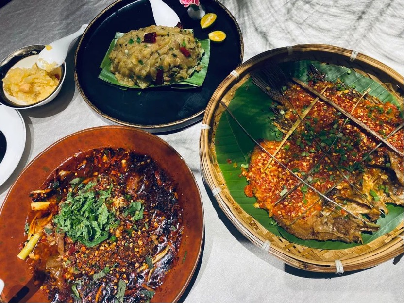

我这个人对于吃向来没有什么特别强烈的情感。但我的人生中，关于吃，倒还是有几个高光时刻。

12年的夏天，我疯狂迷恋芒果。那时候还和父母一起住在深圳，每到周末放学，坐着长途大巴回家，我总会跟着母亲挤进楼下的一间杂乱的水果店挑选好吃的芒果。吃着芒果，我的喜悦也溢于言表。父亲总是工作到很晚回家，我们时常碰不到面。有时候我在学校，母亲也会跟我汇报关于芒果的时事新闻。比如，今天看到了一个超漂亮的芒果，买了帮你放冰箱，而第二天，这个芒果被父亲给消灭了。总能让我恨上好几天。
13年的夏天，我尤其喜爱荔枝。当时我身边有一个茂名的朋友，我总爱和她在课余时间跑到各个地方去玩耍。而那个夏天，是我们感情最好的时候。她总是自豪地跟我说，知道一骑红尘妃子笑吗？杨贵妃吃的荔枝就是我们那里产的。于是在那个夏天，她母亲寄了整整两箱荔枝给她。我们在学校的宿舍里面，席地而坐，吹着空调，吃着荔枝。
18年的夏天，我对披萨情有独钟。在那之前，只要一提起披萨，想起那些夹在芝士和肉片中间的洋葱，我满脑子都没有食欲。可那个夏天，我自己学会了做披萨。大概由于是自己做的，我当时的食欲大到能一个人吃完一整块。朋友们都惊奇于我做的披萨的美味，缠着我再做给他们吃。这是我第一次用自己喜欢的蔬菜和肉类自制了一款独一无二的专属于我的披萨，至今还能回忆起那个披萨的味道。
20年的夏天，成都的串串让我流连忘返。跟朋友一起去附近的城市散心，在成都的第一顿，便是串串。不管是番茄、大骨，还是麻辣汤底，毫无例外都能刺激到我的味蕾。我说不上那是一种怎样的感觉，或许是一种回味吧。吃串串的时候，我想起的是小时候在家乡吃的麻辣烫。长大以后就没再吃过这种带签的火锅了。当时完全顾不上溅到身上的油渍，只顾着和朋友边喝啤酒边聊人生。
之所以讲起吃，是因为这个夏天，我同时吃到了几年前最爱的芒果和荔枝。可是那种强烈的感觉早就找不回来了了。或许是因为今年夏天的品种与之前全然不同了，是我已经很长时间没有习惯那个味道了，是当初和我一起分享美食的人如今不在我的身边了，也或许就是我变得挑剔了，或者它就是没以前好吃了…如果你要找原因，你总能找到成千上百个。
前段时间和朋友聊天，我因为一门作业过于苦恼。朋友说，学计算机最好的办法当然是找个教程，跟着教程一步一步来。但是你的难处在于，首先你没有这样的教程，其次就算有，你百分百复盘教程里的操作，也没办法保证你在途中一个bug都没有。即使一个bug都没有，也无法保证你最后能得到跟教程一样的结果。
我想了一下，是这个道理，即使现在完全复现当初吃这些食物的场景，再次和当时身边的人一起，吃同品种的食物，我也无法保证我能找回当时令我魂牵梦萦的感觉。
朋友也跟我说，高中的时候很喜欢吃一中门口的一家面馆儿，以前每次去吃都得是像加餐一样。昨天去吃就吃了一半，就是觉得不好吃了。我想，喜欢就是有时效性的，而讨厌也是。我以前那么讨厌吃胡萝卜，甚至觉得饿死我也不吃，现在吃起来好像也没什么感觉，也就那样了。
有的时候这种无形化的东西最难琢磨，这就是人心吧。
想起赫拉克利特说过一句话，“人不能两次踏入同一条河流”。因为河水是流动的，就跟人的心是一直在跳动着一样。你每时每刻的情绪都没办法倒退或者重演。
可是就因为回不去，那些高光时刻就毫无意义了吗？ 人生中之所以会有这样那样的高光时刻，并不是让你在以后的人生中想起来唏嘘和感慨万千的，而是让你清楚地记得，我曾经有过那样炽热的情感，并在我心里留下灼烧的印痕，这并不是什么丢人的事情。而在今后的日子里，我也希望我能继续发掘并拥有这样高浓度的情感。
就像《To be forgotten》这首歌中的歌词写的那样，but I’ll just go on, believing and craving, laughing and crying, dreaming and flying。